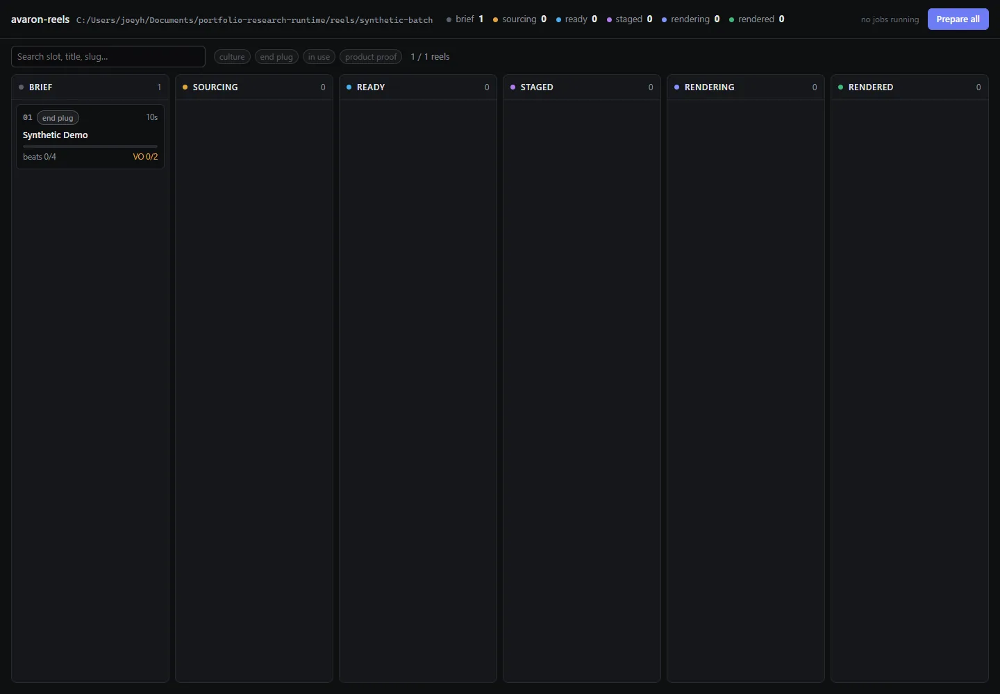

Skip to content← Back to the storyReelForge + AVARON reels
Photos & screenshots
 Actual CLI output shown in a labeled evidence viewer.
Actual CLI output shown in a labeled evidence viewer.
Actual AVARON reels dashboard with a test-fixture brief and deliberately unassigned production assets.